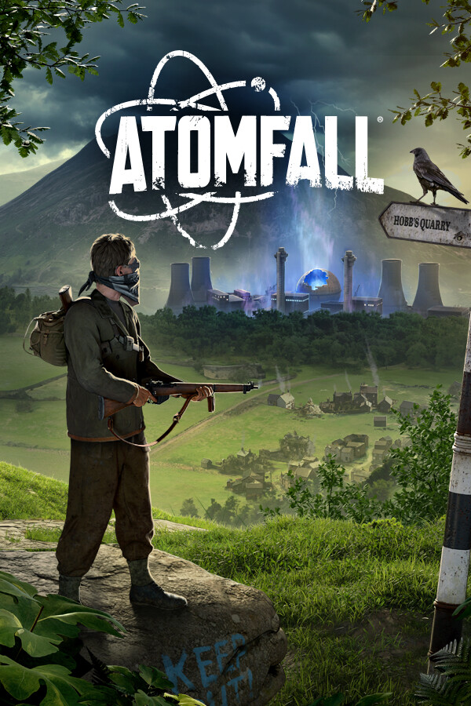

Atomfall
Atomfall
Details
 |
|
| Playtime | Not Played |
| Last Activity | Never |
| Added | 3/28/2026 10:37:27 |
| Modified | 3/28/2026 10:37:58 |
| Completion Status | $Check Out |
| Library | Playnite |
| Source | Wanderer |
| Platform | PC (Windows) |
| Release Date | 3/27/2025 |
| Community Score | 76 |
| Critic Score | |
| User Score | |
| Genre | Action Adventure |
| Developer | Rebellion |
| Publisher | Rebellion |
| Feature | Achievements Adjustable Difficulty Adjustable Text Size Camera Comfort Cloud Saves Color Alternatives Family Sharing Full Controller Support HDR Available In-App Purchases Keyboard Only Option Playable Without Timed Input Save Anytime Single Player Stereo Sound Subtitle Options Surround Sound Trading Cards |
| Links | Community Hub Discussions Guides News Store Page PCGamingWiki Achievements |
| Tag | Action Action RPG Action-Adventure Adventure Atmospheric Choices Matter Exploration First-Person FPS Gore Immersive Sim Open World Post-apocalyptic Sci-fi Singleplayer Stealth Story Rich Survival Survival Horror Violent |
Description
A survival-action game inspired by real-life events, Atomfall is set five years after the Windscale nuclear disaster in Northern England.

Explore the fictional quarantine zone, scavenge, craft, barter, fight and talk your way through a British countryside setting filled with bizarre characters, mysticism, cults, and rogue government agencies.
From Rebellion, the studio behind Sniper Elite and Zombie Army, Atomfall will challenge you to solve the dark mystery of what really happened.
Player Driven Mystery: Unravel a tapestry of interwoven narratives through exploration, conversation, investigation, and combat, where every choice you make has consequences.

Search, Scavenge, Survive: You’ll need to scavenge for supplies, craft weapons and items, and fight desperately to make it out alive!
Desperate Combat: With weapons and ammunition scarce, each frenetic engagement will see you blend marksmanship with vicious hand-to-hand combat. Manage your heart rate to hold a steady aim and ensure you have the energy you need to reach for your cricket bat and land the killer blow.

Green and Unpleasant Land: The picturesque British countryside, with rolling green hills, lush valleys, and rural villages belie the dangers that await you. Navigate cult-controlled ruins, natural caves, nuclear bunkers and more as you explore this dense, foreboding world.

Reimagining Windscale: A fictional reimagining of a real-world event, Atomfall draws from science fiction, folk horror, and Cold War influences to create a world that is eerily familiar yet completely alien.